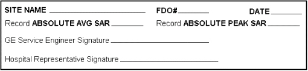

Operating Documentation
Direction 5133315-3, Rev# 14
Signa EXCITE HD 1.5T Service Methods
Module Version 1.0, Version Date 5/3/07
Operating Documentation |
DESCRIPTION: The configuration file contains the specific absorption rate (SAR) limits. The values to enter are described here.
The SAR limits are to be set to the default values delivered with the system as follows:
SAR Default Values = 2 W/Kg for average and 8 W/Kg for peak.
| NOTE: | Incorrect setting of the SAR configuration limit could cause patients to be exposed to unnecessarily high SAR power levels. |
If the customer requests an SAR limit > 2 W/Kg average for investigational studies, then he/she should contact the Administrator of Clinical Research (see below) for permission. Before the limit is raised, he/she will need approval by the Manager of MR Applications and by the hospital's Institutional Review Board (IRB).
After approval from the Manager of Applications and the IRB have been provided, please complete the form and send a copy with the notification of IRB approval to:
GE MEDICAL SYSTEMS
Administrator, MR Clinical Research
3200 North Grandview Boulevard
Waukesha, Wisconsin 53188
Illustration 1: REQUEST FORM FOR SAR >2W/KG

Once all SAR limit changes are properly approved, edit the new values into the configuration files referring to the procedure for the Configuration File Editor (CFE).